王晨开题报告
一、立论依据
1、课题来源、选题依据和立论背景
本文选题紧密立足作为能源动力领域核心支撑学科的燃烧科学，所面临的普遍存在且亟待突破的核心基础性挑战——燃烧不稳定性及其诱发的熄火问题。在航空航天、能源发电等关键领域广泛应用的航空发动机、重型燃气轮机等高端动力装备的实际运行过程中，燃烧室的稳定工作边界不仅是决定装备运行安全性、长期可靠性及极限性能充分发挥的关键核心指标，更直接成为制约动力系统推重比进一步提升、燃油经济性持续优化及低排放目标高效实现的核心瓶颈。熄火作为燃烧不稳定性的极端表现形式，往往会引发装备停机、性能骤降甚至结构损坏等严重后果，其本质是流场特性、燃烧反应与外部环境扰动三者之间复杂的强耦合结果，尤其在气流波动、燃料供给扰动等外部激励作用下，火焰稳定裕度会出现显著降低，给高端动力装备的连续安全运行带来难以规避的严重安全隐患，这也使其成为燃烧领域长期以来亟待攻克、备受关注的核心科学问题。
外部扰动中，声激励是工程实际中普遍存在的典型扰动形式。航空发动机、燃气轮机等动力装置在全工况运行区间内，压气机与风扇转子的旋转气动噪声、静叶与动叶的干涉噪声，以及燃烧过程中热释放脉动诱发的热声振荡等，会形成覆盖宽频率范围、幅值动态变化的复杂声学环境。这种声学扰动并非孤立存在，而是与火焰热释放过程形成显著的非线性双向耦合效应，直接调控熄火过程的萌发与扩展。Chaudhuri等人[1]的研究为该耦合效应提供了关键实验证据 ，其通过粒子图像测速（PIV）与平面激光诱导荧光（PLIF）技术，揭示了谐波强迫下钝体稳定预混火焰的熄火机制：当上游混合物速度受谐波强迫时，回流区内会产生受迫涡脱落现象，且当施加振荡的对流波长大于流向回流区长度时，涡脱落会直接诱发火焰熄火。
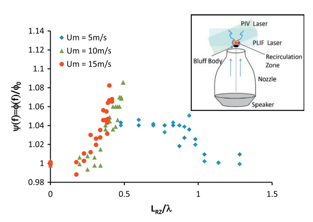
图 1特定扰动频率下的熄火当量比与无扰动时熄火当量比的比值与回流区长度与对流波长比值（LRZ/λ）的函数关系图[1]
如图 1所示，该图呈现了不同主流速度（Um=5、10、15 m/s）下，归一化熄火当量比随回流区平均长度与对流波长比（LRZmean/λ，λ=Um/f为对流波长，f为激励频率）的变化规律。
φ(f) = ⌀(f)/⌀0
其中⌀(f)为受激励工况熄火当量比，⌀0为无扰动工况熄火当量比。结果表明，当 LRZmean/λ 处于 0.3~1.0 区间时，归一化熄火当量比达到峰值，且该区间内火焰出现明显的褶皱与断裂现象，证明此比值范围是受迫涡脱落与火焰相互作用最强的区域，直接主导熄火极限的变化。该研究清晰阐释了声激励类谐波强迫对熄火机制的调控作用，也揭示了流动特征参数（回流区长度、对流波长）与熄火特性的定量关联，为本文聚焦声激励下横向射流火焰熄火机理的研究提供了重要理论与实验参考。
在工程实践中，横向射流火焰是广泛应用于加力燃烧室、驻涡燃烧室、冲压发动机燃烧室等先进动力装置的核心火焰稳定模式，其本质是燃料射流与主流道内横向高速来流相交融形成的复杂燃烧体系。与简单构型火焰相比，横向射流火焰的流场呈现强湍流、大剪切、多尺度涡结构共存的特征，燃料射流的穿透深度、卷吸混合强度及火焰锚定位置均受主流与射流的动量比、混合特性等因素显著影响。为优化横向射流火焰的混合与稳定性能，本文采用双喷嘴构型（前喷嘴注燃料、后喷嘴注空气），该构型可实现燃料与空气的独立调控，为精准调控混合过程与燃烧模式提供了良好的实验载体。
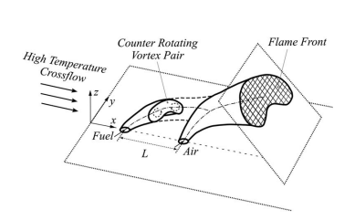
图 2双喷嘴横向射流火焰的结构示意图[2]
如图 2所示，燃料从前喷嘴注入后，先与高温主流初步混合，后与喷嘴注入的空气发生强相互作用，在反向旋转涡对的作用下形成 C 形截面火焰面[2]。这种构型的核心优势在于通过调控喷嘴间距、射流雷诺数及空气/燃料比等参数，可精准调控燃料与空气的混合历程，为研究混合物分数演化与火焰稳定性的关联提供了可控的实验平台。
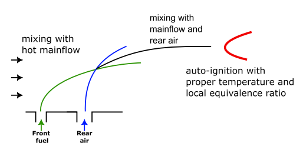
图 3双喷嘴示意图[3]
而图 3进一步细化了双喷嘴横向射流的混合与自燃过程：燃料先与高温主流混合预热，再与空气耦合，通过延长混合主导的火焰稳定过程实现充分混合，最终在局部当量比与温度满足条件时发生自燃[3]。该示意图清晰呈现了横向射流火焰从燃料注入、混合预热到自燃稳定的完整物理过程，也揭示了混合物分数在空间上的梯度分布特征，这正是影响火焰熄火的关键因素。
从燃烧本质来看，混合物分数作为基于守恒标量理论的核心参数，依托燃料与氧化剂混合过程中元素守恒的基本特性，不随化学反应进程发生改变，是定量描述局部燃料与空气混合程度及化学当量比分布的关键指标。其空间分布特征与瞬态演化规律直接决定火焰面的精准定位、燃烧热释放率的空间梯度分布及火焰稳定裕度的边界阈值，更是从燃料混合与反应动力学耦合角度解析熄火机理的核心线索。在声激励作用下，横向射流火焰的流场呈现显著的强非定常动态特性：声激励通过周期性的压力脉动，可精准调制流场中大尺度涡结构的生成起始位置、发展演化轨迹与破碎耗散速率，进而改变燃料射流对周围氧化剂的卷吸混合强度，以及混合物分数在时间与空间维度上的动态演化规律。当局部区域的混合物分数因混合失衡偏离可燃极限范围，或混合过程过快导致火焰面拉伸应变率超过临界阈值时，便会率先诱发局部熄火现象；而这些离散的局部熄火区会在非定常流场的扰动下逐步合并、扩展，最终演变为全局性熄火。因此，借助高精度测量手段精准捕捉声激励作用下混合物分数的瞬态全场分布特征，获取其时空演化的定量数据，是揭示声扰动、流场结构、火焰燃烧特性三者耦合致熄机理的核心前提。
然而，在强湍流、非定常声激励耦合的横向射流火焰流场中，混合物分数的测量面临多重技术瓶颈：强湍流导致标量场时空多尺度演化，声激励诱发流场周期性波动与标量输运的强耦合，以及燃烧发光对诊断信号的干扰，均使得传统测量方法难以实现高精度、瞬态全场测量。双色示踪粒子图像测速（双色PIV）技术凭借其非侵入式、高时空分辨率的优势，为解决该瓶颈提供了有效途径：通过在燃料与空气中分别添加不同粒径或不同光学特性的示踪粒子，利用双色滤镜同步捕捉两路粒子的运动信息，可基于守恒标量输运方程反演得到混合物分数的瞬态全场分布，同时获取流场速度信息，实现流场-标量场的同步测量。这种技术能力恰好匹配本文的研究需求，能够为解析声激励下流场扰动与混合物分数演化及火焰应变率变化与熄火的关系完整物理链条提供直接实验证据。
2、课题研究目的、理论意义和实际应用价值
研究目的：
本研究旨在深入揭示上游来流速度脉动对横向射流火焰稳定与熄火过程的影响机理。研究核心目标是利用先进的双色示踪粒子图像测速（PIV）技术，在可控湍流条件下，同步、高精度地捕获上游非定常流场的时空演化信息，以及与之耦合的火焰动态结构响应。通过建立上游速度脉动的关键特征参数与火焰稳定性指标之间的定量关联，本研究致力于阐明湍流涡结构与火焰锋面相互作用的物理本质，重点解析流动如何通过增强局部拉伸、加剧掺混以改变局部当量比、以及扰动热释放区等途径，诱发局部乃至全局性熄火。最终，研究成果将为发展更精确的湍流燃烧熄火预测模型提供关键的实验依据。
理论意义：
从横向射流火焰的基础理论层面，横向射流火焰因流场结构复杂，其熄火机理始终是燃烧领域的研究重点与难点，而上游速度脉动作为非定常流动的典型特征，对火焰稳定性及熄火临界条件的影响机制尚未形成系统认知。本研究聚焦这一核心问题，引入声激励作为主动调控上游速度脉动的手段，通过精准调控声激励参数（频率、幅值）改变上游流动的非定常特性，可明确速度脉动强度、频率与横向射流火焰熄火过程的关联规律，弥补以往研究多聚焦稳态流动下火焰稳定性，对非定常脉动耦合射流火焰熄灭机制探讨不足的缺陷，深化对横向射流火焰在非定常扰动下动态响应规律的理论认知。
混合物分数作为表征燃料与氧化剂混合程度的核心参数，其时空分布直接决定火焰的燃烧强度、温度场特性及最终的熄火行为，而传统研究中难以实现混合物分数与速度场的同步高精度测量，导致无法量化速度脉动对混合物分数时空演化的影响，进而制约了对流动、混合、燃烧、熄火全链条机理的解析。双色PIV技术凭借其可同步获取流场速度信息与混合物分数分布的独特优势，能够突破传统测量技术的瓶颈，实现横向射流火焰流场中速度脉动特性与混合物分数时空分布的协同诊断，从理论上建立上游速度脉动-混合物分数演化-火焰燃烧状态-熄火临界条件的量化关联模型，揭示速度脉动通过改变燃料混合均匀性、卷吸效率及回流区燃料供给，进而影响火焰稳定性并触发熄火的内在机理，完善非定常流动下燃料混合与燃烧耦合的理论框架。
从技术理论与学科交叉层面，本研究将双色PIV技术与声激励调控手段相结合，应用于上游速度脉动横向射流火焰熄火机理研究，不仅拓展了双色PIV技术在非定常燃烧流场多参数同步测量中的应用场景，为复杂燃烧系统的流场诊断提供了更精准的理论与技术参考，还为声激励技术在燃烧稳定性主动控制中的应用奠定了理论基础。研究成果可丰富燃烧流体力学与燃烧稳定性理论，为后续高效低污染燃烧装置的设计、熄火防控策略的制定提供核心理论依据，同时为同类非定常扰动下燃烧系统的机理研究提供可借鉴的研究范式与理论方法。
实际应用价值：
航空发动机和燃气轮机燃烧室的实际来流始终存在湍流脉动，研究结论能为燃烧室头部设计、燃料喷射策略及稳焰器优化提供理论指导，从而有效拓宽燃烧室的稳定工作范围，提升其在变工况下的运行可靠性。通过对上游脉动-熄火极限机制的阐明，可发展更为精准的熄火边界预测工具，集成于发动机控制系统，实现基于实时流场预估的主动燃烧控制与安全预警，从根本上防范意外熄火风险。此外，随着氢、氨等低碳燃料的推广应用，其燃烧特性对流动扰动更为敏感，本研究构建的机理框架与方法体系，可直接用于评估这些新型燃料在复杂来流条件下的火焰稳定性，加速其在未来低碳能源系统中的安全、高效集成。
二、文献综述
1、国内外研究现状、发展动态
在航空航天、能源动力等工程领域，横向射流燃烧技术因具有混合效率高、燃烧强度大等优势，被广泛应用于航空发动机燃烧室、燃气轮机等核心设备中。横向射流火焰的稳定燃烧直接决定了设备的运行效率与安全性，而燃烧不稳定性引发的火焰振荡、熄火等问题，尤其是贫燃条件下的吹熄现象，不仅限制了燃烧系统的贫燃减排潜力，还可能导致燃烧室热损伤甚至设备故障。上游气流的速度脉动作为燃烧系统中普遍存在的非定常扰动形式，其通过改变横向射流的穿透深度、混合特性及火焰结构，直接影响火焰的稳定燃烧状态，是诱发火焰熄火的关键因素之一。
Rock（2020）[4]等指出液体燃料的近贫燃熄火伴随熄灭-复燃循环，高DCN燃料更难熄火且复燃率更高，多数复燃依赖热产物回流；Wan和Zhao（2020）[5]发现雷诺数决定支架稳定火焰的熄火模式，大雷诺数下会出现火焰夹断，小雷诺数则火焰因根部下游迁移、热量流失而熄灭；Yi（2019）[6]等人揭示横流射流中非预混火焰的熄火与自燃核演化相关，迎风侧因高应变率熄火位置更靠后；Yin（2017）[7]等人表明受限湍流火焰的近贫燃熄火由自持射流振荡引发，慢节奏振荡更易导致熄火-复燃循环，整体可见熄火行为普遍受燃料特性、流动参数和火焰结构的耦合影响。
横向射流的流动结构由射流与主流的相互作用主导，其核心特征包括射流轨迹偏转、剪切层涡旋演化及回流区形成，这些流动特性直接决定了燃料与氧化剂的混合效率，进而影响燃烧过程的稳定性。早期研究中，Fric和Roshko（1994）[8]通过流动可视化实验，首次明确了横向射流尾迹中存在反向旋转涡对，该结构通过卷吸主流流体促进射流扩散，是调控混合过程的关键因素。后续Muppidi和Mahesh（2005）[9]基于直接数值模拟方法，建立了射流轨迹的预测模型，量化分析了射流动量比和密度比对轨迹偏转程度的影响规律，为横向射流流动特性的定量描述提供了理论基础。
Zhang和Yang（2017）[10,11]通过实验与数值模拟相结合的方式，设置射流参数（射流中心速度160m/s，横流速度40m/s），工作介质为空气，射流直径 d=1.27mm。分为a（横流无激励）、b（激励频率5kHz，速度振荡振幅10%）、c（激励频率5kHz，速度振荡振幅50%）三个对比案例，得到如图 4所示的结果。图 4展示了射流中心平面的标量浓度分布，核心反映射流与横流的混合效率、射流扩散范围及浓度均匀性，是标量输运过程的直接体现。
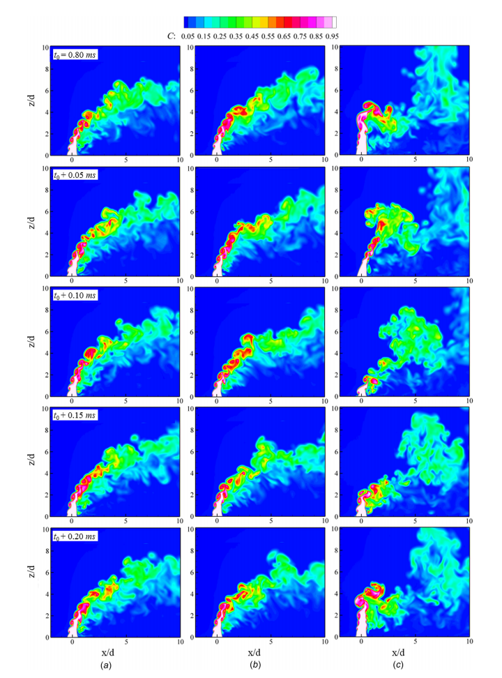
图 4射流中心平面标量浓度的时间演化[11]
系统研究了横向射流近场的流动动力学与混合特性，发现射流出口处的剪切层卷起与主流剪切作用共同主导了初始涡旋的形成，而涡旋的破碎与融合过程直接影响混合的均匀性，为理解横向射流的混合机制提供了重要参考。Gevorkyan等（2016）[12]通过浓度测量实验进一步证实，横向射流的混合过程具有明显的区域差异性，近场混合主要由涡旋卷吸作用主导，远场则以湍流扩散为主，且混合效率随射流穿透深度的增加而显著提升。
剪切层不稳定性是横向射流流动演化的核心驱动力，相关研究已形成系列成果。Megerian等（2007）[13]通过线性稳定性分析，识别出横向射流剪切层中存在Kelvin-Helmholtz（K-H）不稳定性和Orr-Sommerfeld（O-S）不稳定性两种主导模式，其中K-H不稳定性主导剪切层的初始卷起，O-S不稳定性则影响涡旋的后续发展与破碎过程。DeB.Alves等（2008）[14]在此基础上通过实验验证，发现剪切层不稳定性的特征频率与射流出口速度和主流速度的比值密切相关，为通过调控流动参数抑制不稳定性提供了关键依据。针对流动控制需求，Harris等（2021）[15]研究了tabs结构对横向射流不稳定性的调控作用，结果表明合理设计的tabs能够抑制特定频率的不稳定性，延缓涡旋破碎，从而改善射流混合的均匀性与稳定性。此外，Getsinger等（2014）[16]通过PIV技术研究了受限空间内横向射流的结构与稳定性特性，发现边界约束会增强射流与主流的相互作用，导致涡旋结构更复杂，混合效率显著提升，为复杂边界条件下横向射流的应用提供了参考。
横向射流火焰的燃烧稳定性与流动特性紧密耦合，旋流的引入进一步增强了这种耦合效应，同时也增加了燃烧不稳定性的复杂性。Candel等（2012）[17]在旋流火焰动力学的综述研究中指出，旋流诱导的回流区能够稳定火焰根部，为燃烧提供持续的热量与自由基，但回流区的动态演化也可能引发燃烧不稳定性，表现为压力振荡与热释放率振荡的相互耦合。Candel等（2014）[18]进一步深入研究了旋流火焰的动力学特性，发现当旋流数超过临界值时，回流区会发生涡破裂现象，导致火焰根部位置偏移，进而诱发强烈的燃烧振荡。Huang和Yang（2009）[19]针对贫燃预混旋流稳定火焰，系统分析了流动不稳定性对火焰结构的影响，证实了涡破裂引发的回流区形态变化是导致火焰不稳定的关键因素，为旋流火焰的稳定性控制提供了理论支撑。
Palies等（2010）[20]通过实验与数值模拟结合，揭示了旋流器动态特性与湍流预混火焰的耦合机制，认为旋流器的非定常流动会直接导致热释放率波动，进而诱发燃烧不稳定性，该研究为旋流器结构的优化设计提供了重要参考。燃烧不稳定性的本质是热释放率振荡与声学振荡的正反馈循环，Lieuwen（2003）[21]建立了预混燃烧-声波相互作用的理论模型，量化了热释放率对声学扰动的响应特性，为燃烧不稳定性的预测与抑制提供了核心理论框架。Kim等（2008）[22]通过实验研究了火焰结构对火焰传递函数的影响，发现火焰面的拉伸和弯曲会改变热释放率的空间分布，进而影响FTF的幅值和相位，为燃烧不稳定性的定量分析提供了关键参数支持。针对液体燃料燃烧，Sim等（2020）[23]研究了声学强制下液滴燃烧的动态响应，发现声学扰动会改变液滴的蒸发速率和燃烧强度，进而影响整体热释放率，该结果为多相燃烧不稳定性的研究提供了重要参考。
熄火机理方面，贫燃吹熄（LBO）是横向射流火焰最常见的熄火形式，其核心是局部燃料/空气混合比偏离可燃范围或火焰温度低于临界燃烧温度，导致燃烧反应无法持续进行。Shanbhogue等（2009）[24]通过实验建立了钝体稳定火焰的LBO标度律，发现LBO极限与燃料的化学计量比、流动雷诺数及回流区长度密切相关，为LBO极限的预测提供了定量方法。Broadwell和Breidenthal（1982）[25]提出的简单混合与化学反应模型，揭示了混合时间与反应时间的匹配关系对燃烧完整性的影响，当混合时间远大于反应时间时，易发生局部熄火甚至整体吹熄，该模型为熄火机理的分析提供了基础理论支撑。Peters（1988）[26]提出的层流小火焰概念，进一步完善了湍流燃烧中混合与反应耦合的理论体系，明确了湍流脉动对火焰结构及熄灭过程的影响机制，为熄火边界的精准预测提供了重要理论依据。
上游速度脉动作为燃烧室中的典型非定常扰动，其对横向射流火焰熄火的影响逐渐受到关注。Karagozian等（2003）[27]系统研究了横向射流的主动控制策略，发现上游流动扰动可通过改变射流的穿透深度和混合特性，间接影响火焰稳定性，该研究为通过调控上游流动参数改善火焰稳定性提供了新思路。Karagozian（2006）[28]在混合与反应流控制的综述中指出，上游扰动的频率和幅值是影响横向射流混合及燃烧稳定性的关键参数，但相关定量研究仍需进一步深入。Karagozian（2010）[29]在横向射流及其控制的研究中，进一步证实了上游流动调控对火焰稳定性的显著影响，为上游速度脉动相关研究奠定了重要基础。Karagozian（2014）[30]在横向射流的综述研究中，通过烟雾可视化技术，直观对比了无激励、正弦波激励和方波激励三种条件下，横流中射流的流动形态差异，核心目的是验证不同激励方式对射流穿透深度、扩散范围及涡结构形成的影响，为后续基于流动稳定性的射流控制策略提供实验依据，其实验结果如图 5所示。强调了上游非定常扰动对射流火焰稳定性影响的研究缺口，指出需深入揭示其内在作用机理。孙等（2023）[31]在航空发动机燃烧不稳定性研究进展中明确指出，上游气流的非定常扰动是引发燃烧振荡和熄火的重要诱因，但目前关于其定量影响规律和内在机理的研究仍不充分，亟待进一步深入探索。
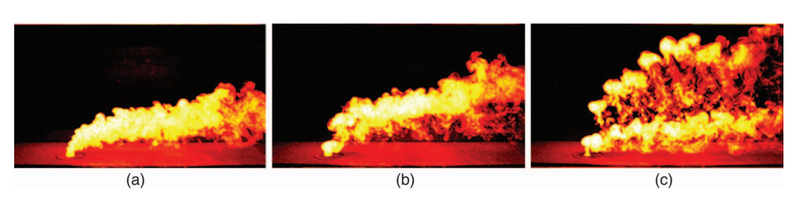
图 5无激励、正弦波、方波对横向射流影响[30]
Allison等（2015）[32]率先采用PLIF技术突破传统测量局限，为火焰几何与不稳定性的关联研究提供了精准工具；在此基础上，Deng等（2019）[33]聚焦声学参数这一关键外部因素，揭示了其对燃烧污染物排放的调控规律，而Liu等（2023）[34]则进一步深入不稳定性的触发机制，明确了低频振荡的阈值特性与耦合过程。针对更复杂的燃烧系统，Bonciolini和Noiray（2019）[35]探讨了顺序燃烧器中热声模态的同步现象，凸显了熵波这一特殊驱动因素的作用；
混合增强技术（尤其是通过射流调制实现的混合增强）一直是研究热点。Vermeulen等（1990）[36]采用扬声器驱动器，在宽激励振幅和射流雷诺数范围内，对受限横流中的射流进行激励，结果在喷射孔处产生了一系列环形涡旋，显著提高了射流的扩散范围与穿透深度，并发现当斯特劳哈尔数为0.22时，混合响应达到最优。
斯特拉哈尔数定义为：
St = fd/Uj
其中f为激励频率,d为射流直径，Uj为射流速度。Gogineni等（1998）[37]通过在管道侧壁布置四个压电致动器对矩形射流进行激励，使低速尾迹区域收缩，射流穿透深度增加。Johari等（1999）[38]采用电磁阀在喷射周期的部分时段切断水流供应，发现射流的完全调制会不同程度地改变射流结构、穿透深度、稀释度和混合效果，具体依赖于脉冲持续时间与频率。Eroglu与Breidenthal（2001）[39]同样通过电磁阀产生方波激励，得出结论：在近场区域可实现最优的涡环间距与强度，从而提升射流穿透深度与混合效率。M’Closkey等（2002）[40]量化了时间强制圆形射流的驱动动力学特性，并开发了一种用于开环射流控制的射流补偿系统设计方法，观察到当方波激励频率为射流自然涡脱落频率的次谐波时，射流的穿透深度与扩散范围达到最优。方波激励是提升射流穿透和扩散的核心，正弦波激励难以形成强穿透的离散涡结构，混合增强效果微弱。其实验工况如表 1实验工况表，实验结果如图 6所示。Narayanan等（2003）[41]采用开环控制，在射流斯特劳哈尔数为0.1的条件下进行激励，发现该控制方法能有效规整非定常性并增强混合。Shapiro等（2006）[42]针对多种激励频率，确定了方波激励的最优时间脉冲宽度。
表 1实验工况表[40]
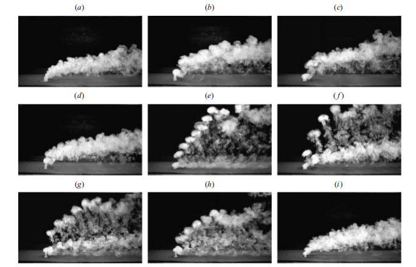
图 6实验结果图[40]
粒子图像测速（PIV）技术作为全场流动测量的核心手段，凭借其非侵入性、高分辨率等优势，已广泛应用于横向射流和燃烧流动的研究中，为流动特性的精准表征提供了关键技术支撑。Sakakibara和Adrian（1999）[43]基于PIV技术实现了水相中温度的全场测量，通过示踪粒子的响应特性与温度的关联，建立了温度测量的定量方法，为后续燃烧流场中温度和速度的同步测量提供了重要技术参考。Kähler等（2016）[44]在第4届国际PIV挑战的总结中，系统评估了不同PIV测量方案的精度和适用性，针对复杂燃烧流场的测量难点，提出了优化策略，为PIV技术在燃烧领域的应用提供了方法学指导。
Kashanj和Nobes（2023）[45]采用4D双色LIF技术研究侧向受限瑞利-贝纳德对流，优化了温度测量灵敏度，强调体积测量对准确分析传热特性的重要性。King等（1997）[46]利用双示踪剂PLIF技术，实现了湍流剪切层中分子混合程度的瞬时定量检测。Kosiwczuk等（2005）[47]开发了基于荧光成像的两相PIV技术，成功实现气液两相速度场的同时独立测量。Ulrich等（2024）[48]将双色LIF技术应用于水/乙醇混合液滴，兼顾了温度测量与成分分析，拓展了技术的工业应用场景。这些研究均围绕LIF、PLIF或PIV相关光学诊断技术展开，分别适配单相对流、湍流混合、两相流及混合液滴等不同研究场景，验证了此类技术在流场参数测量中的核心价值，为相关领域的后续研究提供了技术参考。
Brübach等（2013）[49]测得多种磷光体的温度-寿命特性，其即热成像磷光体受激后，发射光的衰减寿命随温度变化的规律，其结果如图 7所示。揭示不同材料在宽温域（近绝对零度至1970K）的响应差异。结合双色示踪测速，可通过优选磷光体，利用其温度敏感发光特性，关联上游速度脉动与横向射流火焰温度场，助力熄火机理研究。
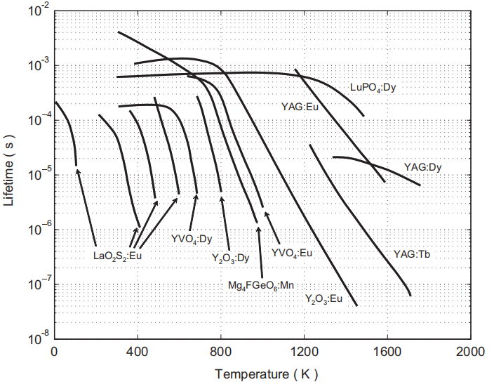
图 7多种热释光荧光粉的温度寿命特性[49]
Aldén等（2011）[50]综述了热成像磷光体在燃烧等场景的测温应用，展示了多种磷光体的温度敏感性，结果如图 8所示，实线为寿命-温度关系，虚线为光谱强度比-温度关系，曲线斜率反映灵敏度。结合研究得到结论，热成像磷光体可作为双色示踪粒子，其温度敏感性可助力同步获取横向射流火焰温度与速度场。适配的磷光体能在火焰环境下稳定响应，为解析速度脉动与温度场耦合对熄火的影响提供关键数据支撑，提升熄火机理研究的准确性。
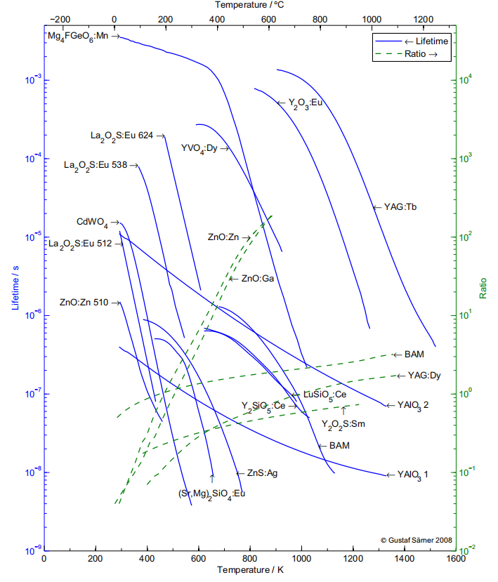
图 8多种荧光粉的温度敏感性[50]
Abram等（2018）[51]使用BAM:Eu²⁺磷光粉末为样本，采用脉冲Nd:YAG激光的355nm波长激发，通过光谱仪与探测器采集其室温下的激发和发射光谱，其结果如图 9所示。激发光谱在 355nm 附近呈现强吸收峰，匹配常用激光光源；发射光谱为中心 445nm 的宽谱带。实验中同步记录激发峰与发射峰的强度及波长分布，明确其光谱响应特性：宽激发谱适配多种激光，可见区强发射便于探测器捕捉，且光谱稳定性不受流体环境影响。该表征为双色成像实验中滤镜的选择提供依据，通过分割其发射谱带获取强度比，进而实现温度测量，适配横向射流火焰的复杂工况，为速度脉动与熄火关联分析提供可靠的温度示踪基础。
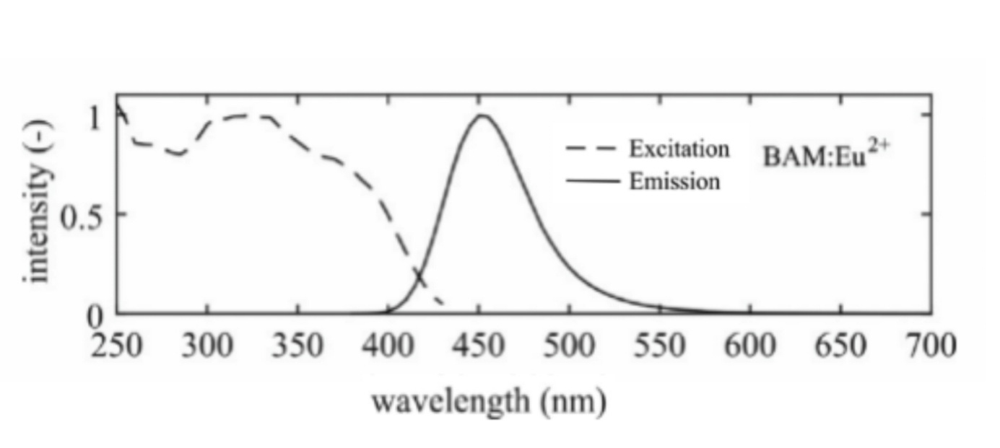
图 9 BAM粉末室温激发与发射光谱[51]
双色示踪PIV技术作为PIV的拓展形式，通过两种不同响应特性的示踪粒子（如不同材质、不同粒径或不同荧光特性的粒子），能够实现速度与温度的同步测量，有效解决了单一测量技术难以捕捉多物理量耦合效应的问题。Oberleithner等（2012）[52]利用双色示踪技术研究了湍流涡破裂的间歇性特征，通过两种示踪粒子的速度差异和荧光强度变化，同步获取了速度场和温度场信息，展示了该技术在非定常流动测量中的独特优势。该技术能够精准捕捉流动与燃烧的耦合演化过程，为上游速度脉动下横向射流火焰熄火机理的研究提供了理想的测量手段。
Polifke等（2002）[53]通过PIV技术研究了预混燃烧器的不稳定性，发现非单调压力响应是燃烧不稳定性的重要诱因，该研究证实了PIV技术在燃烧不稳定性机理分析中的有效性。Shapiro等（2006）[42]在受控横向射流的优化研究中，利用PIV技术精准测量了不同控制策略下的流场结构变化，为流动控制效果的评估提供了定量数据支撑。这些研究充分验证了PIV技术在燃烧流场研究中的可靠性，为本文采用双色示踪PIV技术开展相关研究提供了坚实的技术基础。
2、所阅文献的查阅范围及手段；参考资料
[1] CHAUDHURI S, KOSTKA S, RENFRO M W, et al. Blowoff mechanism of harmonically forced bluff body stabilized turbulent premixed flames[J/OL]. Combustion and Flame, 2012, 159(2): 638-640. DOI:10.1016/j.combustflame.2011.08.005.
[2] WANG Z, WANG Y, LIU X. Experimental Study of a Novel Twin-Nozzle Configuration for Reacting Jet in Hot Crossflow[J/OL]. Journal of Energy Resources Technology, 2022, 144(9): 092105. DOI:10.1115/1.4053646.
[3] WANG Z, WANG Y, LIU X. Lift-off region temperature field and planar flow field of a twin-nozzle reacting jet in hot crossflow[J/OL]. Proceedings of the Combustion Institute, 2023, 39(1): 1269-1278. DOI:10.1016/j.proci.2022.08.123.
[4] ROCK N, EMERSON B, SEITZMAN J, et al. Near-lean blowoff dynamics in a liquid fueled combustor[J/OL]. Combustion and Flame, 2020, 212: 53-66. DOI:10.1016/j.combustflame.2019.10.010.
[5] WAN J, ZHAO H. Blow-off mechanism of a holder-stabilized laminar premixed flame in a preheated mesoscale combustor[J/OL]. Combustion and Flame, 2020, 220: 358-367. DOI:10.1016/j.combustflame.2020.07.012.
[6] YI T, HALLS B R, JIANG N, et al. Autoignition-controlled flame initiation and flame stabilization in a reacting jet in crossflow[J/OL]. Proceedings of the Combustion Institute, 2019, 37(2): 2109-2116. DOI:10.1016/j.proci.2018.06.057.
[7] YIN Z, BOXX I, MEIER W. Influence of self-sustained jet oscillation on a confined turbulent flame near lean blow-out[J/OL]. Proceedings of the Combustion Institute, 2017, 36(3): 3773-3781. DOI:10.1016/j.proci.2016.07.026.
[8] FRIC T F, ROSHKO A. Vortical structure in the wake of a transverse jet[J/OL]. Journal of Fluid Mechanics, 1994, 279: 1-47. DOI:10.1017/S0022112094003800.
[9] MUPPIDI S, MAHESH K. Study of trajectories of jets in crossflow using direct numerical simulations[J/OL]. Journal of Fluid Mechanics, 2005, 530: 81-100. DOI:10.1017/S0022112005003514.
[10] ZHANG L, YANG V. Flow Dynamics and Mixing of a Transverse Jet in Crossflow—Part I: Steady Crossflow[J/OL]. Journal of Engineering for Gas Turbines and Power, 2017, 139(8): 082601. DOI:10.1115/1.4035808.
[11] ZHANG L, YANG V. Flow Dynamics and Mixing of a Transverse Jet in Crossflow—Part II: Oscillating Crossflow[J/OL]. Journal of Engineering for Gas Turbines and Power, 2017, 139(8): 082602. DOI:10.1115/1.4035809.
[12] GEVORKYAN L, SHOJI T, GETSINGER D R, et al. Transverse jet mixing characteristics[J/OL]. Journal of Fluid Mechanics, 2016, 790: 237-274. DOI:10.1017/jfm.2016.5.
[13] MEGERIAN S, DAVITIAN J, DE B. ALVES L S, et al. Transverse-jet shear-layer instabilities. Part 1. Experimental studies[J/OL]. Journal of Fluid Mechanics, 2007, 593: 93-129. DOI:10.1017/S0022112007008385.
[14] DE B. ALVES L S, KELLY R E, KARAGOZIAN A R. Transverse-jet shear-layer instabilities. Part 2. Linear analysis for large jet-to-crossflow velocity ratio[J/OL]. Journal of Fluid Mechanics, 2008, 602: 383-401. DOI:10.1017/S002211200800102X.
[15] HARRIS E W, BESNARD A C, KARAGOZIAN A R. Effect of tabs on transverse jet instabilities, structure, vorticity dynamics and mixing[J/OL]. Journal of Fluid Mechanics, 2021, 918: A8. DOI:10.1017/jfm.2021.323.
[16] GETSINGER D R, GEVORKYAN L, SMITH O I, et al. Structural and stability characteristics of jets in crossflow[J/OL]. Journal of Fluid Mechanics, 2014, 760: 342-367. DOI:10.1017/jfm.2014.605.
[17] CANDEL S, DUROX D, SCHULLER T, et al. Progress and challenges in swirling flame dynamics[J/OL]. Comptes Rendus. Mécanique, 2012, 340(11-12): 758-768. DOI:10.1016/j.crme.2012.10.024.
[18] CANDEL S, DUROX D, SCHULLER T, et al. Dynamics of Swirling Flames[J/OL]. Annual Review of Fluid Mechanics, 2014, 46(1): 147-173. DOI:10.1146/annurev-fluid-010313-141300.
[19] HUANG Y, YANG V. Dynamics and stability of lean-premixed swirl-stabilized combustion[J/OL]. Progress in Energy and Combustion Science, 2009, 35(4): 293-364. DOI:10.1016/j.pecs.2009.01.002.
[20] PALIES P, DUROX D, SCHULLER T, et al. The combined dynamics of swirler and turbulent premixed swirling flames[J/OL]. Combustion and Flame, 2010, 157(9): 1698-1717. DOI:10.1016/j.combustflame.2010.02.011.
[21] LIEUWEN T. Modeling Premixed Combustion-Acoustic Wave Interactions: A Review[J/OL]. Journal of Propulsion and Power, 2003, 19(5): 765-781. DOI:10.2514/2.6193.
[22] KIM D, LEE J G, QUAY B D, et al. Effect of Flame Structure on the Flame Transfer Function in a Premixed Gas Turbine Combustor[J/OL]. 2008: 757-765. DOI:10.1115/GT2008-51014.
[23] SIM H S, PLASCENCIA M A, VARGAS A, et al. Acoustically Forced Droplet Combustion of Liquid Fuel with Reactive Aluminum Nanoparticulates[J/OL]. Combustion Science and Technology, 2020, 192(5): 761-785. DOI:10.1080/00102202.2019.1593971.
[24] SHANBHOGUE S J, HUSAIN S, LIEUWEN T. Lean blowoff of bluff body stabilized flames: Scaling and dynamics[J/OL]. Progress in Energy and Combustion Science, 2009, 35(1): 98-120. DOI:10.1016/j.pecs.2008.07.003.
[25] BROADWELL J E, BREIDENTHAL R E. A simple model of mixing and chemical reaction in a turbulent shear layer[J/OL]. Journal of Fluid Mechanics, 1982, 125: 397-410. DOI:10.1017/S0022112082003401.
[26] PETERS N. Laminar flamelet concepts in turbulent combustion[J/OL]. Symposium (International) on Combustion, 1988, 21(1): 1231-1250. DOI:10.1016/S0082-0784(88)80355-2.
[27] KARAGOZIAN A R, CORTELEZZI L, SOLDATI A. Manipulation and Control of Jets in Crossflow: 卷 439[M/OL]. Vienna: Springer Vienna, 2003[2026-01-16]. http://link.springer.com/10.1007/978-3-7091-2792-6. DOI:10.1007/978-3-7091-2792-6.
[28] KARAGOZIAN A R. Control of Mixing and Reactive Flow Processes[M/OL]//KOUMOUTSAKOS P, MEZIC I. Control of Fluid Flow. Berlin, Heidelberg: Springer, 2006: 75-94[2021-02-20]. https://doi.org/10.1007/978-3-540-36085-8_3. DOI:10.1007/978-3-540-36085-8_3.
[29] KARAGOZIAN A R. Transverse jets and their control[J/OL]. Progress in Energy and Combustion Science, 2010, 36(5): 531-553. DOI:10.1016/j.pecs.2010.01.001.
[30] KARAGOZIAN A R. The jet in crossflow[J/OL]. Physics of Fluids, 2014, 26(10): 101303. DOI:10.1063/1.4895900.
[31] 孙晓峰, 张光宇, 王晓宇, 等. 航空发动机燃烧不稳定性预测及控制研究进展[J]. 航空学报, 2023, 44(14): 6-28.
[32] ALLISON P M, CHEN Y, IHME M, et al. Coupling of flame geometry and combustion instabilities based on kilohertz formaldehyde PLIF measurements[J/OL]. Proceedings of the Combustion Institute, 2015, 35(3): 3255-3262. DOI:10.1016/j.proci.2014.05.127.
[33] DENG K, WANG M, SHEN Z, et al. Effect of Different Acoustic Parameters on NOx Emissions of Partially Premixed Flame[J/OL]. Applied Sciences, 2019, 9(7): 1490. DOI:10.3390/app9071490.
[34] LIU Y, YAN Y, SHANG S, et al. Acoustic Triggering of Combustion Instability in a Swirling Flame: An Experimental Study[J/OL]. Energies, 2023, 16(14): 5568. DOI:10.3390/en16145568.
[35] BONCIOLINI G, NOIRAY N. Synchronization of Thermoacoustic Modes in Sequential Combustors[J/OL]. Journal of Engineering for Gas Turbines and Power, 2019, 141(3): 031010. DOI:10.1115/1.4041027.
[36] VERMEULEN P J, CHIN C F, YU W K. Mixing of an acoustically pulsed air jet with a confined crossflow[J/OL]. Journal of Propulsion and Power, 1990, 6(6): 777-783. DOI:10.2514/3.23284.
[37] GOGINENI S, GOSS L, ROQUEMORE M. Manipulation of a jet in a cross flow[J/OL]. Experimental Thermal and Fluid Science, 1998, 16(3): 209-219. DOI:10.1016/S0894-1777(97)10028-0.
[38] JOHARI H, PACHECO-TOUGAS M, HERMANSON J C. Penetration and Mixing of Fully Modulated Turbulent Jets in Crossflow[J/OL]. AIAA Journal, 1999, 37(7): 842-850. DOI:10.2514/2.7532.
[39] EROGLU A, BREIDENTHAL R E. Structure, Penetration, and Mixing of Pulsed Jets in Crossflow[J/OL]. AIAA Journal, 2001, 39(3): 417-423. DOI:10.2514/2.1351.
[40] M’CLOSKEY R T, KING J M, CORTELEZZI L, et al. The actively controlled jet in crossflow[J/OL]. Journal of Fluid Mechanics, 2002, 452: 325-335. DOI:10.1017/S0022112001006589.
[41] NARAYANAN S, BAROOAH P, COHEN J M. Dynamics and Control of an Isolated Jet in Crossflow[J/OL]. AIAA Journal, 2003, 41(12): 2316-2330. DOI:10.2514/2.6847.
[42] SHAPIRO S R, KING J M, M’CLOSKEY R T, et al. Optimization of Controlled Jets in Crossflow[J/OL]. AIAA Journal, 2006, 44(6): 1292-1298. DOI:10.2514/1.19457.
[43] SAKAKIBARA J, ADRIAN R J. Whole field measurement of temperature in water using two-color laser induced fluorescence[J/OL]. Experiments in Fluids, 1999, 26(1-2): 7-15. DOI:10.1007/s003480050260.
[44] KÄHLER C J, ASTARITA T, VLACHOS P P, et al. Main results of the 4th International PIV Challenge[J/OL]. Experiments in Fluids, 2016, 57(6): 97. DOI:10.1007/s00348-016-2173-1.
[45] KASHANJ S, NOBES D S. Application of 4D two-colour LIF to explore the temperature field of laterally confined turbulent Rayleigh–Bénard convection[J/OL]. Experiments in Fluids, 2023, 64(3): 46. DOI:10.1007/s00348-023-03589-9.
[46] KING G F, LUCHT R P, DUTTON J C. Quantitative dual-tracer planar laser-induced fluorescence measurements of molecular mixing[J/OL]. Optics Letters, 1997, 22(9): 633-635. DOI:10.1364/OL.22.000633.
[47] KOSIWCZUK W, CESSOU A, TRINITÉ M, et al. Simultaneous velocity field measurements in two-phase flows for turbulent mixing of sprays by means of two-phase PIV[J/OL]. Experiments in Fluids, 2005, 39(5): 895-908. DOI:10.1007/s00348-005-0027-3.
[48] ULRICH H, WEISS R, ZIGAN L. Two-dye two-color laser-induced fluorescence spectroscopy on droplets of green solvent water/ethanol mixtures for thermometry and mixture composition[J/OL]. Experiments in Fluids, 2024, 65(9): 129. DOI:10.1007/s00348-024-03868-z.
[49] BRÜBACH J, PFLITSCH C, DREIZLER A, et al. On surface temperature measurements with thermographic phosphors: A review[J/OL]. Progress in Energy and Combustion Science, 2013, 39(1): 37-60. DOI:10.1016/j.pecs.2012.06.001.
[50] ALDÉN M, OMRANE A, RICHTER M, et al. Thermographic phosphors for thermometry: A survey of combustion applications[J/OL]. Progress in Energy and Combustion Science, 2011, 37(4): 422-461. DOI:10.1016/j.pecs.2010.07.001.
[51] ABRAM C, FOND B, BEYRAU F. Temperature measurement techniques for gas and liquid flows using thermographic phosphor tracer particles[J/OL]. Progress in Energy and Combustion Science, 2018, 64: 93-156. DOI:10.1016/j.pecs.2017.09.001.
[52] OBERLEITHNER K, PASCHEREIT C O, SEELE R, et al. Formation of Turbulent Vortex Breakdown: Intermittency, Criticality, and Global Instability[J/OL]. AIAA Journal, 2012, 50(7): 1437-1452. DOI:10.2514/1.J050642.
[53] POLIFKE W, FISCHER A, SATTELMAYER T. Instability of a Premix Burner With Nonmonotonic Pressure Drop Characteristic[J/OL]. Journal of Engineering for Gas Turbines and Power, 2002, 125(1): 20-27. DOI:10.1115/1.1519267.
三、研究内容、技术路线、创新点
1、主要研究内容及拟解决的关键技术
研究内容：
本研究旨在通过双色示踪粒子图像测速技术，深入探究上游速度脉动对横向射流火焰稳定性的影响机制，最终阐明其熄火机理。研究将首先搭建一个专用于横向射流火焰研究的燃烧实验平台，确定以甲烷为燃料的基础工况参数及其调节范围，并建立对火焰宏观结构、温度场及燃烧效率的系统化观测分析方法。在此基础上，集成一套高精度声激励脉动系统，以实现频率覆盖、波形调整等多种形式的可控扰动，确保声学条件在流场中均匀、稳定地施加，为研究提供一致且可重复的扰动源。
为揭示声学扰动对火焰稳定性的影响机理，研究将开展系统的单变量实验。在固定其他条件的前提下，分别调节声激励的频率与波形，利用高速摄影技术全程记录火焰形态的动态演变，精确捕捉熄火临界瞬间。通过统计分析不同声学参数下的熄火延迟时间、临界射流速度及临界当量比等关键阈值，量化评估各声学参数对火焰熄火特性的影响程度与敏感性。
研究的核心在于引入双色粒子图像测速技术，以解析声激励作用下复杂的流场耦合机制。该技术能同时追踪并分离燃料射流与背景空气流中的示踪粒子，从而同步获取并对比分析燃料流与空气流在扰动下的瞬态速度场与湍流结构。借助此技术，研究将重点剖析上游速度脉动与射流剪切层之间的相互作用，明确声波能量如何转化为特定流场结构的动力学行为，例如大尺度涡旋的生成、演变及其对燃料-空气混合过程的调控作用。
最终，基于上述宏观火焰响应与微观双色流场测量数据的综合分析，本研究将致力于阐明上游速度脉动影响横向射流火焰熄火的内在物理机理。通过建立声激励参数、流场脉动特性与火焰稳定性临界条件之间的定量关联，揭示导致火焰失稳熄火的关键流动事件与临界判据。研究成果将为主动调控火焰稳定性、拓展燃烧操作边界提供坚实的实验依据与理论支撑。
拟解决的关键技术：
1.声激励调控下上游速度脉动与横向射流火焰熄火的耦合作用机理问题：明确声激励参数（频率、幅值）对上游速度脉动强度、频率及分布特性的定量调控规律，解决非定常速度脉动与横向射流火焰流场相互作用的量化表征难题。重点厘清不同速度脉动条件下，火焰形态、燃烧强度的动态响应规律，揭示上游速度脉动触发横向射流火焰熄火的临界阈值与触发路径，填补非定常扰动下横向射流火焰熄火机制的认知空白。
2.双色PIV技术同步诊断速度场与混合物分数的精准性及关联规律问题：解决双色PIV技术在横向射流燃烧流场中，速度信息与混合物分数时空分布同步高精度测量的技术适配问题，建立基于双色示踪的混合物分数校准与反演方法，克服传统测量技术无法同步量化流动与混合特性的瓶颈。核心明确上游速度脉动对混合物分数时空演化的影响规律，量化两者的动态关联特征，为解析流动-混合耦合对熄火的作用奠定数据与方法基础。
3.速度脉动-混合物分数-火焰熄火的内在机制问题：基于双色PIV实测数据，解决混合物分数演化在速度脉动与火焰熄火之间的中介作用量化难题，明确速度脉动通过改变燃料混合状态影响火焰稳定性的内在机理。构建上游速度脉动-混合物分数时空分布-火焰燃烧状态-熄火临界条件的量化关联模型，确立不同工况下横向射流火焰熄火的判据，完善非定常流动下燃料混合与燃烧耦合的理论框架，为火焰熄火防控提供理论支撑。
2、拟采取的研究方法、技术路线、实施方案及可行性分析
研究方法：
本实验旨在通过集成双色示踪粒子图像测速（双色PIV）技术，深入探究上游速度脉动对横向射流火焰熄火过程的影响机理。实验系统的核心是一个专用的横向射流火焰燃烧实验平台，其示意图如图 10所示，实物图如图 11所示。在该平台中，左侧通入的主流燃料与空气在第一级燃烧室内形成稳定的多重扩散火焰。其高温产物气流经过一个收缩段实现流场均匀化后，进入二级燃烧室。在此处通入次级燃料射流，高温主流即将其点燃，形成横向射流火焰。实验首先明确了包括燃料类型、横向射流速度及喷射压力在内的基础工况参数及其可调范围，并建立了基于高速摄影与温度测量的火焰宏观结构、温度分布及燃烧效率的系统化分析方法。
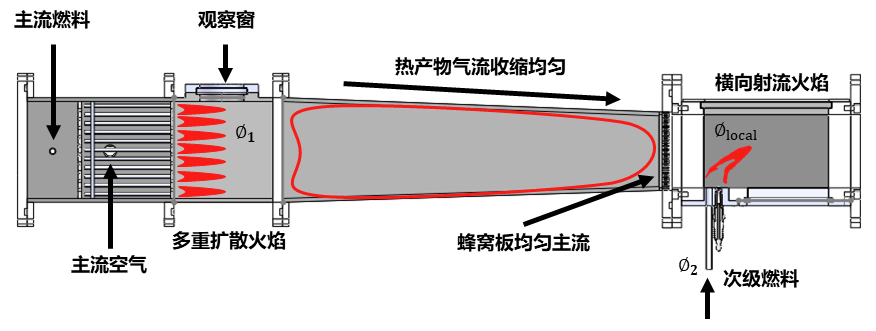
图 10横向射流火焰实验台示意图
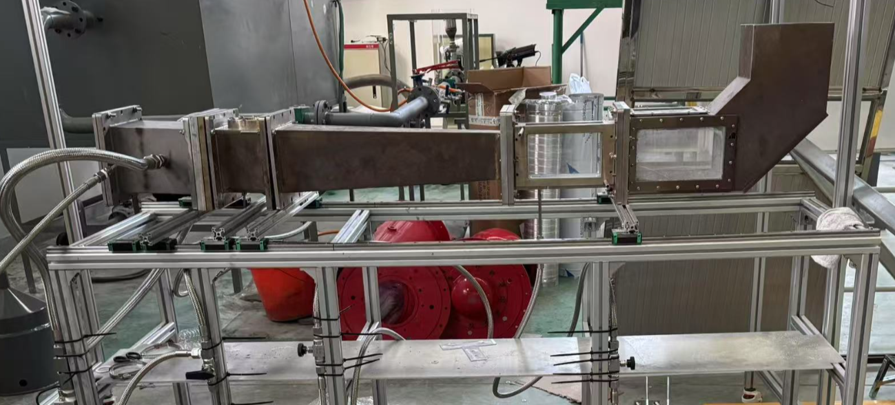
图 11横向射流火焰实验台实物图
为精确引入可控的上游速度脉动，本研究设计并集成了如图 12所示的声激励脉动系统。该系统以扬声器为核心声源，通过一个刚性腔体与导声通道将声能定向约束并传导至燃烧室上游的特定区域，从而在目标流场中形成强度与分布可控的声压场。扬声器通过内部刚性结构固定，以最大限度减少其机械振动对实验流场的非声学干扰。该系统能够精确调控激励频率（覆盖45Hz至2.5kHz）与激励波形（如正弦波、方波），从而确保能够系统地研究不同频谱与幅值特性的声学扰动对火焰稳定性及最终熄火特性的影响，并为流场测量提供可重复、一致性良好的扰动条件。
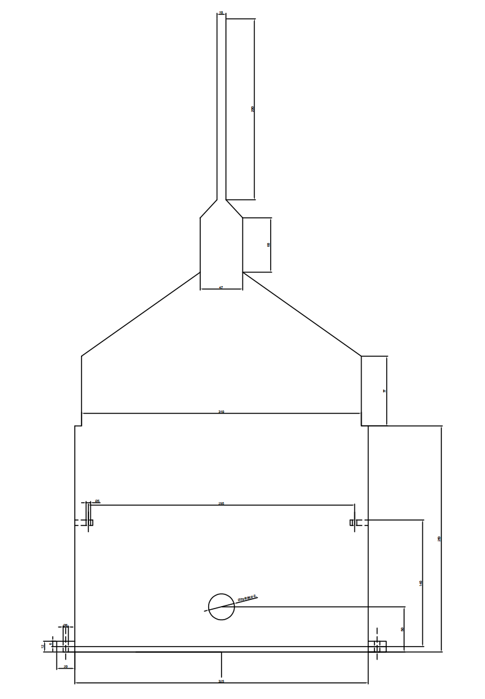
图 12声激励脉动系统示意图
本研究聚焦于单喷嘴及双喷嘴构型下横向射流火焰的熄火特性，系统探究声激励参数对火焰熄火过程的调控规律，并重点剖析双喷嘴布局中喷嘴间流场干涉、燃料混合及火焰相互作用的内在机理。喷嘴结构如图 13，喷嘴实物图如图 14，次级燃料通过细管进入二级燃烧室。
当采用单喷嘴时，将声激励脉动系统的细管连接到喷嘴，通过声激励脉动直接而影响两气体的混合，观察声激励脉动对火焰的熄火特性的影响；当采用双喷嘴时，分别将两个喷嘴连接通入甲烷和空气的管路，分别利用声激励脉动作用于两个气体，观察声激励脉动对火焰熄火特性的影响。
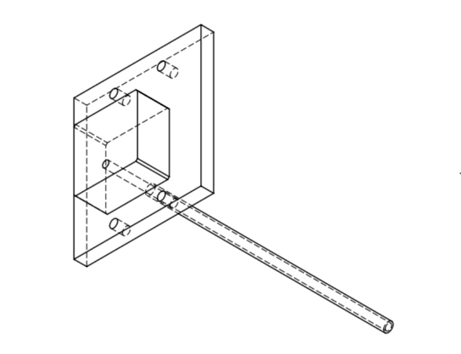
图 13喷嘴示意图
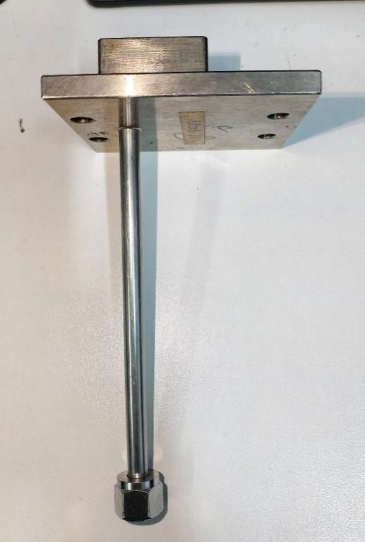
图 14喷嘴实物图
实验的关键诊断手段为双色粒子图像测速技术，其装置示意图如图 16粒子图像测速技术示意图所示。该系统的核心在于利用两种具有不同荧光或磷光特性的示踪粒子，分别标记燃料射流与上游背景空气流。BAM:Eu²⁺粉末激发光谱在355nm附近呈现强吸收峰，故系统采用中心波长为365nm的紫外LED阵列作为光源，其光谱图如图 15紫外LED灯光谱图，并通过一对母线方向相互垂直的平凸柱面镜，将其整形为薄片激光，用以照亮待测流场平面。当片激光照射流场时，两种示踪粒子被激发并发出不同颜色的荧光。高速相机同步拍摄这些荧光图像，再经由计算机进行互相关分析，即可分别独立解算出燃料流与空气流的瞬态二维速度场。这一独特能力使得本研究能够直接、同步地量化声激励作用下，燃料与空气在剪切层附近的相对运动、混合过程以及湍流相互作用。
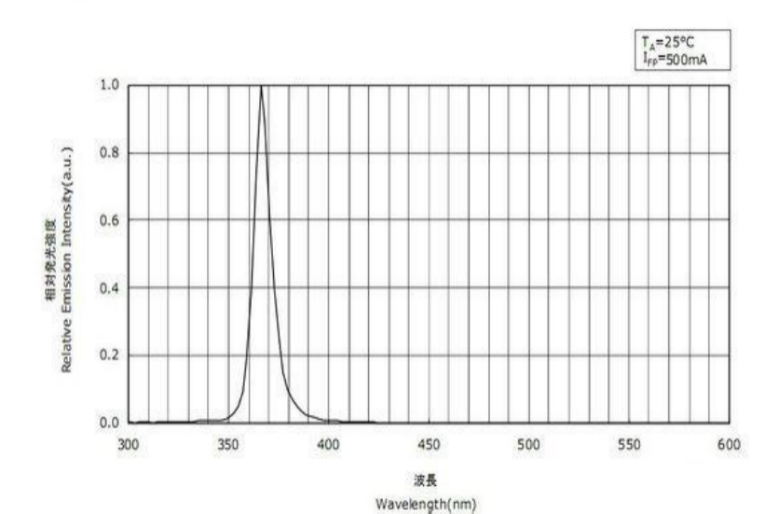
图 15紫外LED灯光谱图
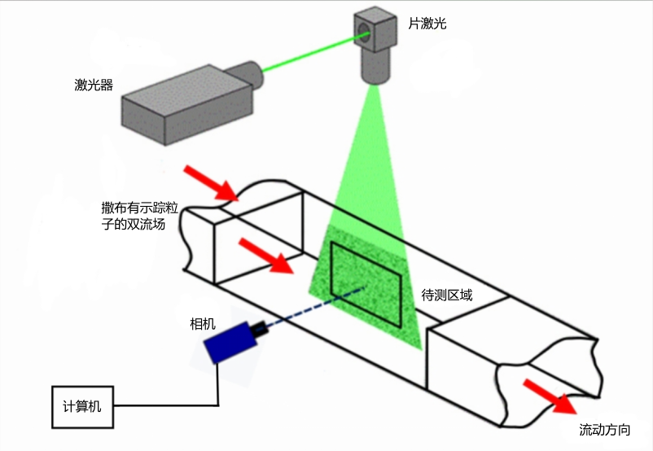
图 16粒子图像测速技术示意图
基于上述系统，实验方法的核心在于多系统协同与多物理场数据同步采集。通过统一的时序控制器，将声激励信号、双色PIV的激光脉冲与相机曝光、以及记录火焰形态的高速摄影进行毫秒级精度的同步触发，确保所有数据在时间上严格对齐。具体流程为：在设定稳定的基础工况后，施加特定参数的声激励；同步记录火焰的动态响应，并利用高速摄影精确判定熄火临界瞬间；同时，双色PIV系统在熄火过程前后及过程中，捕捉燃料流与空气流的耦合速度场演化。
对数据的分析将实现从现象到机理的深入贯通。首先，将宏观观测到的熄火临界参数（如临界射流速度、熄火延迟时间）与声激励参数进行关联。更重要的是，通过对同步获取的双色PIV速度场进行深入分析，提取关键信息：通过对比两种流体的速度场，解析出声激励所激发的上游速度脉动如何改变射流剪切层的涡旋结构、卷吸强度和空间发展尺度；进一步通过计算混合物分数或混合层厚度的瞬态分布，定量表征燃料与空气的局部混合效率变化。最终，通过将流场混合恶化的时空演变序列与火焰面局部熄火或整体失稳的动态图像在相位上进行关联对比，从而揭示上游速度脉动导致火焰熄火的物理本质——即声学能量如何通过调制流体动力学不稳定性，进而破坏燃料与氧化剂在火焰稳定器附近的必要混合与驻留时间，最终触发熄火。这一从声学扰动到两相流场响应再到火焰稳定性丧失的完整链条分析，将为建立基于流动混合控制的火焰稳定性判据提供直接的实验证据。
技术路线：
本项目的技术路线如图 17技术路线图
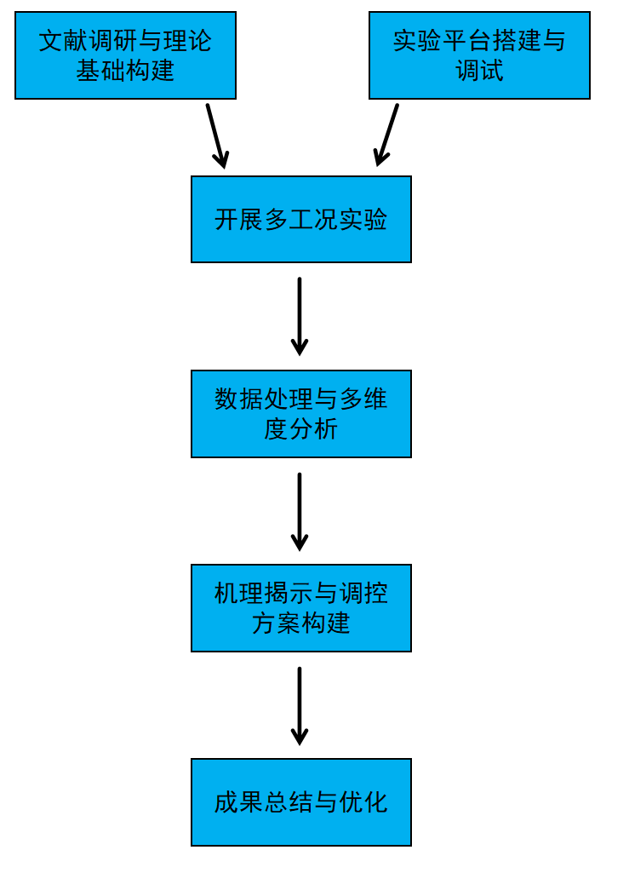
图 17技术路线图
1.文献调研与理论基础构建：系统梳理横向射流火焰稳定性及熄火机制、声激励燃烧调控、激光诊断技术应用等领域的相关研究成果，明确当前研究缺口；结合流体力学、燃烧学理论，为实验方案设计提供理论支撑。
2.实验平台搭建与调试：基于已完成的横向射流火焰初步实验平台，增设声激励发生与调控系统，整合激光诊断系统（PIV系统）与原有基础测试系统（热电偶测温、高速摄影）；实现声激励参数精准调控、激光信号与燃烧过程同步采集，确保实验系统稳定可靠。
3.多工况实验开展：复现初步实验中的多工况条件（不同主流流速、燃料/空气当量比、燃料种类），获取基准状态下横向射流火焰的稳定燃烧范围、熄火临界条件及基础参数，然后固定主流工况参数，通过改变声激励参数（频率、幅值、相位）开展系列调控实验，利用高速摄影捕捉火焰宏观形态演化，结合粒子图像测速（PIV）技术同步采集燃料混合场、流场、燃烧反应区等参数。
4.数据处理与多维度分析：对实验采集的宏观火焰图像、温度数据处理，通过图像识别技术提取火焰形态特征参数，利用粒子图像测速数据处理软件获取流场速度矢量与湍流强度，对比分析基准工况与不同声激励工况下的实验数据，明确声激励参数对横向射流火焰熄火边界、熄火机制的影响。
5.机理揭示与调控方案构建：基于多维度实验数据分析结果，深入剖析声激励与横向射流火焰流场扰动、燃料混合强化、燃烧反应调控的耦合作用机制，阐明声激励影响火焰熄火特性的内在机理；结合机理分析，提出针对不同工况的精准声激励调控方案。
6.成果总结与优化：梳理研究过程中的实验数据、机理分析结论，形成研究报告；结合研究结果验证理论框架的合理性，针对现有研究的不足，提出后续深化研究方向。
实验方案：
1.实验系统搭建
在已验证稳定的横向射流火焰初步实验平台基础上搭建实验系统。其中，燃料供给系统采用流量计及针阀精准调控甲烷与助燃空气的流量，声激励调控系统由信号发生器、功率放大器及高频扬声器组成，可输出频率45~2.5kHz的正弦/方波激励信号，燃烧反应腔采用石英玻璃材质，便于可视化观测火焰形态；测试系统整合基础测试模块（K型热电偶、B型热电偶、高速相机）与激光诊断模块（PIV系统），实现宏观与微观参数同步采集。
2.实验工况设计
基准工况设置：以初步实验获取的多工况数据为基础，选取典型主流流速、燃料/空气当量比（0.2~1.4）作为基准工况参数组合，在其中选择工况较好的工况用作后续实验，覆盖横向射流火焰的稳定燃烧区间与典型熄火工况，每个基准工况重复测试，确保数据重复性与可靠性。
声激励调控工况设计：采用控制变量法设计声激励调控工况，固定基准工况的主流流速、当量比，仅改变声激励参数。声激励频率选取50~500Hz范围内的特征频率点，相位选取0°、90°、180°、270°四个档位，系统探究单一参数变化及多参数耦合对横向射流火焰熄火特性的影响。同时，设置无超声激励的空白对照组，用于对比分析声激励的调控效应。
3.实验测试与数据采集方法
宏观参数测试：采用高速工业相机拍摄横向射流火焰的动态演化过程，拍摄区域覆盖整个燃烧反应腔，记录火焰形态、位置、脉动频率及熄火瞬间的宏观特征；采用K型热电偶测量燃烧器壁面温度，B型热电偶测量二级燃烧室温度，每个测点保温时间≥30s，确保温度读数稳定，每个工况采集3组温度数据取平均值。
微观参数测试：采用粒子图像测速系统测试燃料混合场与燃烧反应区参数，以BAM: Eu2+(BAM是宿主晶体基质，全称钡镁铝酸盐粉末, 其作用是为发光离子提供稳定的晶体结构环境,Eu2+是掺杂的二价铕离子，作为活性发光中心为燃料示踪剂，跃迁产生发光)采用365nm脉冲激光片光照明火焰混合区域，获取燃料浓度分布图像；采用PIV系统测试横向射流场参数，BAM粉末在有无紫外灯照射下的对比如图 18。
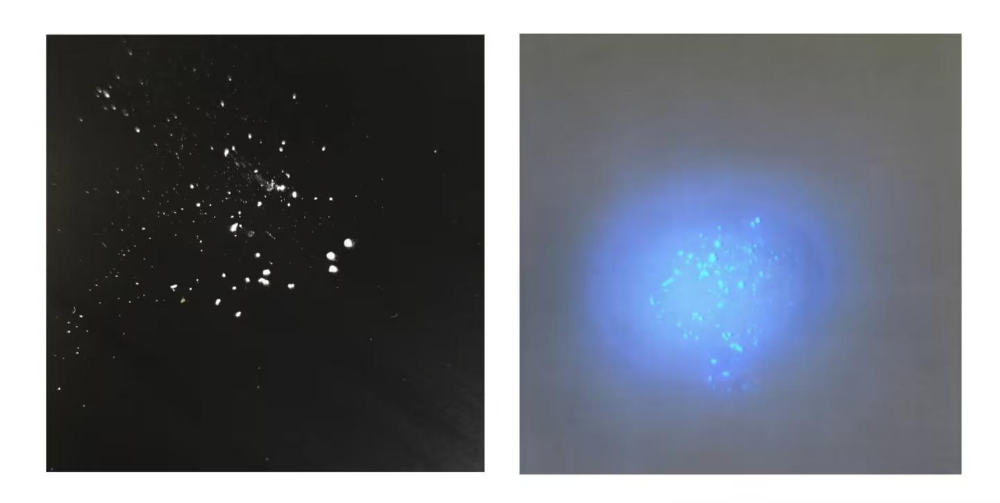
图 18 BAM粉末有无紫外灯照射对比图
数据采集控制：每个实验工况下，先启动横向射流发生系统与燃料供给系统，待流场与燃料混合稳定后点火，维持稳定燃烧后再开始数据采集；数据采集过程中实时监控燃烧状态，确保无外界干扰；每个工况采集至少高速图像、温度数据及激光诊断数据，采集完成后关闭燃料供给系统，待燃烧腔冷却至室温后进行下一个工况测试。
4.数据处理方法
宏观数据处理：利用图像分析软件对高速相机拍摄的火焰图像进行处理，提取火焰高度、宽度、面积、振荡频率等形态特征参数；通过对温度数据进行统计分析，绘制温度分布曲线，计算平均温度与温度波动幅度。
微观数据处理：对所得到的图片进行混合物分数的计算，得到粒子的相关性，明确混合特性对火焰反应区演化的影响，采用粒子图像测速技术对图像进行互相关分析，剔除无效粒子信号，获取流场速度矢量分布，计算湍流强度、涡量等流场特征参数。
可行性分析：
在燃烧流场诊断技术方面，粒子图像测速（PIV）技术、高速摄像技术等非侵入式诊断手段已发展成为燃烧实验室的标准配置与常规研究工具，能够实现对燃烧流场速度分布、火焰形态演化等关键信息的高时空分辨率表征。与此同时，配套的多源信号同步采集技术与相位锁定技术已具备高度的成熟度与可靠性，可实现流场参数、燃烧参数与外部激励信号的精准时序匹配，为深入解析声波与火焰动态耦合过程的内在规律提供了关键技术支撑。
在本研究开展前期，围绕上游速度脉动对横向射流火焰熄火特性的影响这一核心主题，本人已系统性学习并掌握了双色PIV技术的理论原理与实操方法，涵盖粒子图像采集、图像预处理（如背景降噪、畸变校正）、以及相关算法的使用。同时，深入掌握了基于双色PIV图像灰度值标定与反演的混合物分数场定量计算方法，能够实现流场速度参数与混合物分数分布的耦合分析，精准捕捉射流火焰区域的组分混合状态。奠定了坚实的技术基础，充分保障了实验数据处理环节的可行性与可靠性。
本研究已开展横向射流火焰多工况初步实验，为后续深入研究声激励对其熄火特性的影响奠定了坚实的实验基础，已完成初步实验系统搭建，包括燃料供给系统、横向射流发生系统、燃烧反应腔、基础测试系统（热电偶测温、高速摄影）的实验平台搭建，并且得到多工况初步实验结果。
如图 19为经过实验拍摄得到的第一级燃烧室的燃烧情况图片，针对于多个工况进行多次实验并对其进行拍摄，选取较好的工况供以后实验使用。
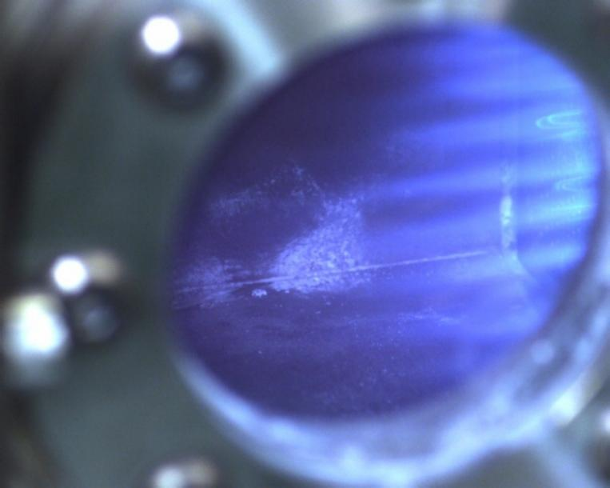
图 19一级燃烧室火焰图片
如图 20为使用乙烯作为燃料时拍摄的二级燃烧室的火焰燃烧图片，由于乙烯燃烧的火焰为黄色，而甲烷燃烧的火焰为淡蓝色，乙烯便于观察，初步实验采用乙烯，后续气体会使用甲烷。当气体在第一级燃烧室燃烧，会产生高温气流流向二级燃烧室，在二级燃烧室底部通入不同当量比的空气与甲烷的混合气体，在第二级燃烧室，通入的气体被点燃，观察到横向射流火焰。
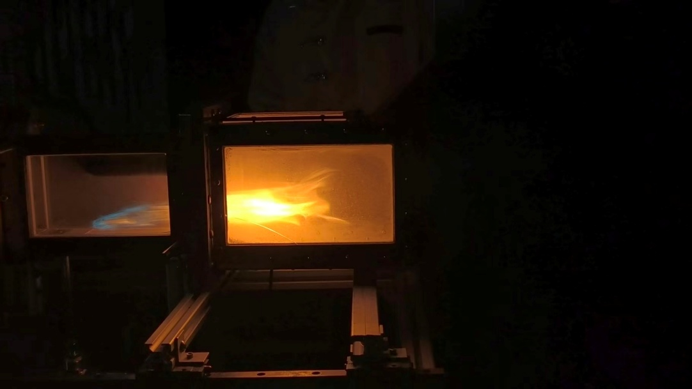
图 20二级燃烧室火焰图片
在声波与燃烧耦合作用领域，关于声波调控火焰稳定性的物理机制研究已形成成熟的理论体系。其中，声波传播过程中引发的对流速度扰动、涡量场演化及压力脉动等关键物理效应，作为调控火焰稳定性的核心作用路径，其内在作用规律与定量表征方法已得到系统阐释，为后续开展针对性研究奠定了坚实的理论基础。
针对燃烧特性研究所需的关键参数测量需求，温度、压力、物种组分浓度等核心物理化学参数的检测技术已趋于完善。当前主流的测量设备不仅具备良好的稳定性与重复性，且经过长期工程实践与学术验证，其数据采集精度、响应速率均能充分满足本课题对实验数据准确性与可靠性的严苛要求，为实验研究的顺利开展提供了可靠的设备保障与数据支撑。
横向射流火焰作为工程实践中广泛存在的典型燃烧构型，其稳燃机理与熄火临界特性一直是燃烧领域的研究热点。学术界已围绕该构型开展了大量系统性研究，积累了丰富的实验数据、数值模拟结果及理论分析成果，相关文献报道详实且体系完备。这些前期研究成果为本课题提供了明确的理论切入点、成熟的分析框架及可借鉴的研究方法，有效降低了课题研究的探索成本，明确了核心研究方向。
3、论文的创新点
1.本研究将采用双色粒子图像测速（PIV）等先进燃烧诊断技术，建立流场与火焰特性的同步测量系统。通过该系统可同步获取横向射流场的速度分布、湍流强度等流场信息，以及火焰温度分布、火焰面形态、燃烧反应区演化等火焰特性参数，基于多维度同步数据的耦合分析，实现对声激励调控火焰熄火过程机理层面的深度解析与本质洞察。
2.本研究聚焦于单喷嘴及双喷嘴构型下横向射流火焰的熄火特性，系统探究声激励参数对火焰熄火过程的调控规律，并剖析双喷嘴布局中喷嘴间流场干涉、燃料混合及火焰相互作用的内在机理。
3.研究核心目标在于突破传统燃烧特性研究中以现象观测为核心的局限，通过主动调控声激励的频率、振幅等关键参数，通过调节声激励脉动系统的各项参数，进而筛选并确定能够产生正效应（即显著扩展火焰熄火极限、提升燃烧稳定性）的优化声学参数区间，为燃烧系统的主动控制技术研发提供理论支撑与参数依据。
四、研究基础
1、所需实验手段、研究条件和实验条件
在横向射流火焰发生系统的基础上，在其二级燃烧室下方增设声激励系统，通过声激励系统发出指定频率和幅值的声音，观察其对横向射流火焰熄火的影响。配备声激励脉动系统（含信号发生器、功率放大器、扬声器），实现激励频率（如45-20kHz）、振幅的精准可调与稳定输出，并确保声激励能够在燃烧流场中实现均匀传播与稳定施加，从而保障声学扰动条件的一致性。
数据采集系统：高速相机用于记录火焰形态演变；温度传感器采用热电偶，以及通过流量计来获取实验所需要的工况。
本人已系统性学习并掌握了双色PIV技术的理论原理与实操方法，涵盖粒子图像采集、图像预处理（如背景降噪、畸变校正）、以及相关算法的使用。同时，深入掌握了基于双色PIV图像灰度值标定与反演的混合物分数场定量计算方法，能够实现流场速度参数与混合物分数分布的耦合分析，精准捕捉射流火焰区域的组分混合状态。奠定了坚实的技术基础，充分保障了实验数据处理环节的可行性与可靠性。
本研究需要对最终得到的双色图像进行处理。以红蓝双色示踪粒子为例，红蓝双色粒子伴随气体中进入同一流场中，利用高速相机拍摄得到一系列的红蓝示踪粒子混合图像，首先应当把红蓝双色示踪粒子分别提取出来，提取后分为连续拍摄的只存在红色粒子的图片和只存在蓝色粒子的图片，对连续拍摄的红色和蓝色粒子图片分别进行时间平均，得到的结果如图 21红蓝色粒子时间平均图所示。
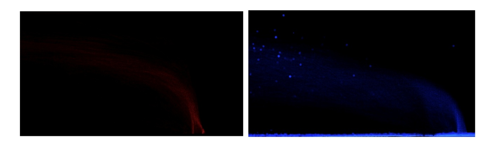
图 21红蓝色粒子时间平均图
将得到的图片进行归一化处理，分别得到归一化后对应的值为Rred与Rblue，利用Rred与Rblue，使用以下公式
可以得到fred与fblue以及对应的图，其结果如图 22红蓝粒子对应的f图：
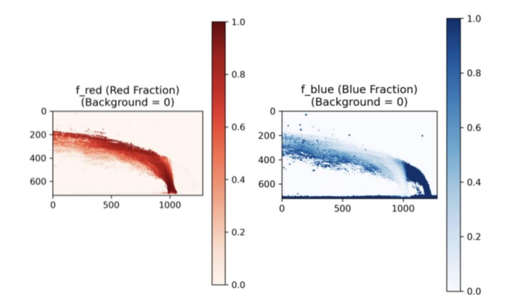
图 22红蓝粒子对应的f图
根据上述结果可以得到粒子的混合物分数，其结果如图 23混合物分数图：
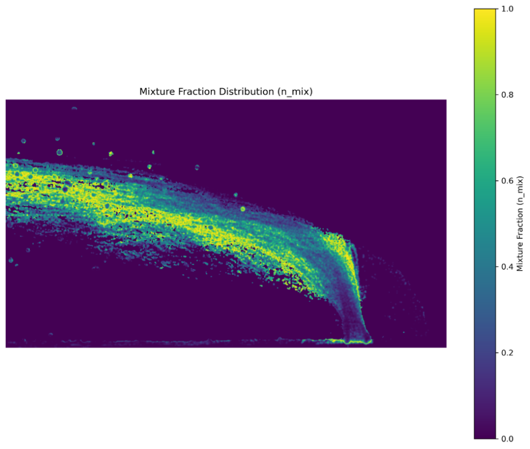
图 23混合物分数图
可以看出在右下角出口处喷出的粒子可以观察到粒子的混合程度逐渐越来越高，并且可以利用两红蓝粒子的相邻两张图片可以进行速度场求解，得到相对应的流场文件，利用该文件，可以进行速度场流线图的绘制，可以观察出当前粒子的速度场，其结果如图 24速度场流线图所示。通过流线图速度场，可以得到流动方向的空间分布、速度大小的相对分布等信息，并且可以在将声激励脉动与无声激励脉动时的图进行比较，评估声激励脉动对其调控作用。
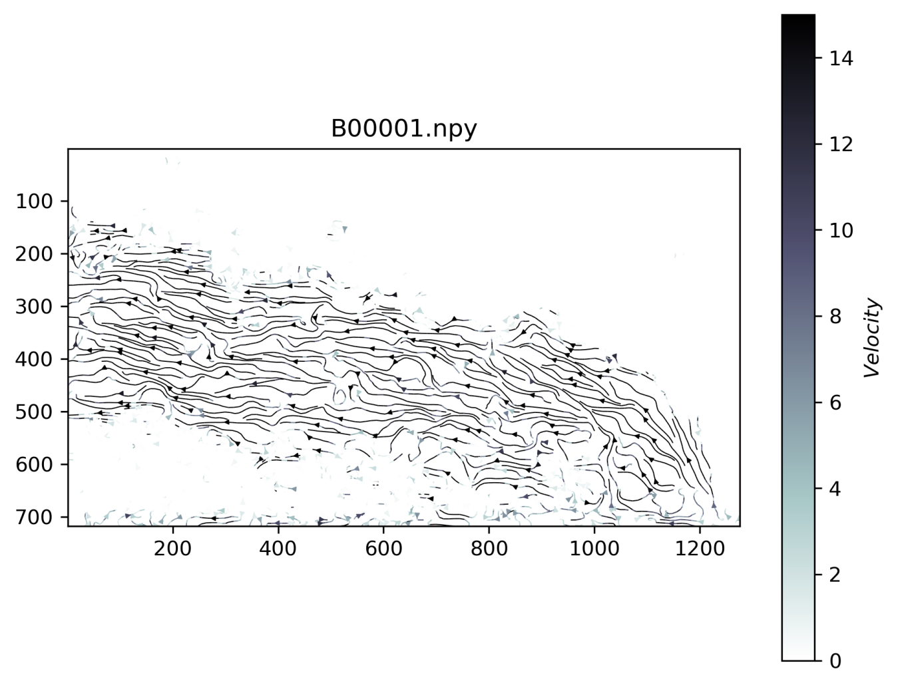
图 24速度场流线图
2.所需经费，包含经费来源、开支预算（工程设备、材料须填写名称、规格、数量）
经费来源：研究生科研经费
开支预算
紫外熔融石英镜片
H-K9L镜片
1英寸×10片；50mm*100mm×20片
五、工作计划
工作量估计
（时数）
1
2
3
4
5
6
7
8
对横向射流火焰实验台尺寸进行设计，搭建横向射流火焰实验台
加工所需要用到的石英镜片，对紫外光源的光路进行搭建，使最终输出的光为片光
对声激励脉动系统进行设计并且加工，并且挑选适合的扬声器
利用搭建的横向射流实验台进行实验，记录试验工况及拍摄照片
整合阅读的文献，撰写文献综述及开题报告
根据初步实验得到的结果，挑选合适的工况进行实验，并对所得的数据进行处理
撰写毕业论文，完成毕业论文初稿
修改毕业论文，定稿，论文查重、盲审，准备毕业答辩
260
120
140
500
200
800
640
480
2024.9-2025.1
2025.1-2025.4
2025.4-2025.6
2025.6-2025.10
2025.10-2026.1
2026.1-2026.9
2026.9-2027.3
2027.4-2027.6
完成对横向射流火焰试验台的搭建
完成对实验光路的初步搭建
完成声激励脉动系统结构的设计
对横向射流火焰每个工况的燃烧情况有大体了解
提交开题报告
得到处理的数据，对实验结果进行分析，得到对横向射流火焰熄火有正向影响的工况
提交毕业论文初稿
提交毕业论文终稿
山东科技大学硕士研究生学位论文开题报告评分表
| 评审项目 | 分值 | 评 分 标 准 | 得分（百分制） | |
| 一、选题依据 | 30分 | 21~30分 | 选题有较强的理论意义、实用价值，深刻的学术研究内涵。 | |
| 11~20分 | 选题有一定的理论意义、实用价值，有一定的学术研究内涵。 | |||
| 0~10分 | 选题缺乏理论意义和实用价值。 | |||
| 二、理论基础和专门知识 | 20分 | 15~20分 | 较好的掌握坚实宽广的理论基础和系统专业知识 | |
| 6~15分 | 基本的掌握坚实宽广的理论基础和系统专业知识 | |||
| 5分以下 | 未能掌握坚实宽广的理论基础和系统知识 | |||
| 三、选题难度及先进性 | 30分 | 21~30分 | 研究课题属本学科发展方向并居前沿位置，具有自己独特的思考、研究课题具有较强的先进性 | |
| 11~20分 | 研究课题属本学科的发展方向，并具有先进性。 | |||
| 0~10分 | 研究课题与本学科的发展方向先进性不明显，难度欠佳。 | |||
| 四、文字表达 | 10分 | 8~10分 | 条理清晰，分析严谨，文笔流畅 | |
| 4~7分 | 条理较好，层次分明，文笔较流畅 | |||
| 3分以下 | 写作能力较差 | |||
| 五、口头报告 | 10分 | 8~10分 | 论文严密、逻辑性强、表达清楚。 | |
| 3~7分 | 基本概念清晰、层次分明。表达较清楚。 | |||
| 3分以下 | 表达较差 | |||
| 总分 | ||||
开题评审小组组成：
年 月 日
开题报告正文（原报告 PDF：proposal.pdf｜Word 源：王晨开题报告.docx）